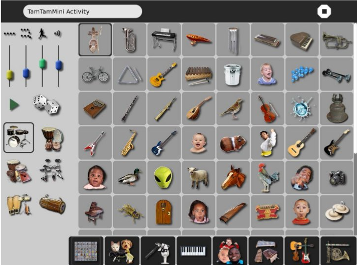
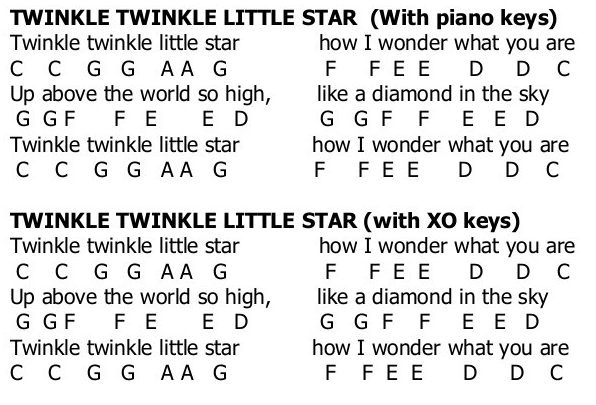

Guide de l'enseignant Sugar/OLPC
Ceci est la traduction par l'équipe d'OLPC France du guide publié par OLPC Canada (PDF) ; nous les remercions ici de nous avons accordé l'autorisation de commencer cette traduction.
Table des matières
P.O.E.S.I.E
Objectifs pédagogiques
- Les élèves seront capables de discuter d’une poésie pour identifier ses parties.
- Les élèves enregistreront le poème avec leur propre voix et photographieront une image à associer au poème.
- Ils utiliseront ce travail comme support à l’imagination pour ajouter une partie à un poème existant.
Niveau : école élémentaire
Sujet: maîtrise de la langue française (lecture, écriture, expression oral)
Rôle de l’enseignant
- l’enseignant dirige les actions des élèves ;
- l’enseignant accompagnent les élèves pour attendre l’objectif attendu ;
Ressources
- Petite poésie sélectionnée pour intéresser les élèves, en relation avec l’environnement de l’école (de façon à ce qu’une photo pertinente puisse être prise)
Activités : « enregistrer », « story builder », « speak »
Première leçon
- l’enseignant trouve une courte poésie (environ 4 lignes), en fait des photocopies ou la partage avec les élèves à travers la function “voisinnage du XO”
- les élèves discutent de la poèsie : qu’est-ce qui en fait un poème, quelles sont les parties du poème ? qu’est-ce qui est décrit ? le titre correspond-il au sujet ?comment le poème sonne-t-il lorsqu’il est lu à voix haute ?
Leçon 2
- les élèves ouvrent « enregister » et utilisent l’enregistrement audio pour enregistrer le poème qu’ils lisent eux-mêmes
- ils utilisent ensuite « enregistrer » pour faire une photographie qui corresponde à ce que le poème décrit selon eux
Adaptations et extensions
- Les capacités des dispositifs tels que les XO permettent de faire de l’introduction à la poésie une activité beaucoup plus interactive, qui offrent la possibilité de mettre en place des formes d’apprentissages constructivistes et collaboratives.
- Les enseignants peuvent étendre cette activité avec différentes formes d’expression artistique, en introduisant des poèmes plus longs, en rédigeant le poèmes de façon créative, en utilisant des paroles de chanson et en faisant des clips vidéos, en créant des histoires et en les jouant.. soyez créatifs !
Lecture théatrale
Objectif pédagogique
- Les élèves travailleront par deux pour effectuer une lecture théatrale d’une court livre pour enfants, d’un poème ou d’un chapitre de roman.
- Les élèves auront à explorer les différents sons and accompagnement avec TamTam Mini.
Niveau : cycle 3
Sujet : langage
Rôle de l’enseignant
- L’enseignant guide la découverte des élèves
Ressources
- Impression de clavier de piano
- Si possible une casque audio pour chaque élève
Activités : TamTam Mini
Introduction
L’enseignant effectuera une lecture théatrale d’une courte histoire, poème ou chapitre de roman Installation :
- Les élèves travaillent par deux pour choisir ce qu’ils veulent lire (environ 5 minutes suivant la longeur de la lecture)
- Les élèves lirons le paragraphe /l’histoire / le poème choisi et identifieront les passages pour lesquels des effets sonores pourraient être ajoutés. On pourra envisager l’ajout de voix comme de sons de l’environnement.
Réalisation des élèves
Créer puis jouer une lecture théatrale en utilisant des effets sonores à partir des ordinateurs.
- Dans TamTam Mini, les étudiants peuvent clicker sur les images pour explorer la gamme des sons disponibles. Chaque image correspond à différents sons (voir les copies d’écran ci-dessous). Utilisez l’ensemble du clavier pour voir la gamme complète des sons s pour chaque image.
- À partir de la vue principale choisir « TamTam Mini »
- Parcourez l’histoire et explorez les possibles en ajoutant différents effets sonores pour votre lecture.
- Une fois que les sons sont déterminés, parcourez l’histoire avec une personne qui lit et l’autre qui produit les effets sonores sur le XO.
- Effectuez l’ensemble du projet pour un ami, l’enseignant ou la classe.
Extension
- Les élèves réalisent leur travail pour la classe, une autre classe, ou pour une performance.
- Mélanger les groupes pour voir comment sonnent les effets sonore d’un groupe sur l’histoire d’un autre groupe.
Grille d’évaluation de la lecture théatrale
Nom de l’élève : Nom de l’histoire / du livre / du poème : - [ ] Niveau 1 - [ ] Niveau 2 - [ ] Niveau 3 - [ ] Niveau 4 Variété des sons : - [ ] Utilise un nombre de sons limité - [ ] Utilise des sons - [ ] Utilise beaucoup de sons - [ ] Utilise une grande variété de sons Compréhension de l’histoire : - [ ] Les sons ne sont pas en adéquation avec les idées développées dans l’histoire - [ ] Utilise des sons en adéquation avec les idées développées dans l’histoire - [ ] Utilise des sons en adéquation avec les idées développées dans l’histoire - [ ] Ajoute de bons effets dramatiques - [ ] Utilise des sons en adéquation avec les idées développées dans l’histoire avec une excellente dramatisation Créativité : - [ ] Créativité limitée - [ ] Créativité peu présente dans la performance - [ ] Créativité présente dans la performance - [ ] Grande créativité présente dans la performance
L’exploration et la création de la musique
Objectifs
- Les élèves joueront une mélodie avec l’accompagnement.
- Les élèves exploreront des sons variés et les accompagnements dans TamTam Mini.
Niveaux : 6ème 5ème 4ème
Sujet : Musique
Rôle du professeur : Guider la découverte
Contrôle : schéma de contrôle inclus
Ressources :
- Impressions de clavier de piano
- Écouteurs pour chacun des élèves si possible
- Partitions
- Activité : TamTam Mini
Modifications et adaptations
Les élèves doivent utiliser les notes sur le clavier pour créer une composition.
Le professeur montre la technique de playback pour enseigner la mélodie.
Introduction
Le professeur joue une chanson sur l’XO en utilisant l’accompagnement. Les élèves peuvent utiliser leur partitions de musique pour chanter et suivre.
Mise en place
Le professeur chantera d’abord la mélodie et puis enseignera les paroles sans mélodie. Puis le professeur distribuera les impressions du clavier de piano et montera aux élèves comment jouer la mélodie sur leur XO’s. Les élèves et le professeur chanteront et joueront la mélodie ensemble.
Ce que les étudiants feront
- De la vue principale, choisir “TamTam Mini.”
- Les élèves doivent cliquer sur les images pour explorer les sons. Chaque image correspond à un son différent.
- Les élèves peuvent jouer les mélodies à partir des sons qu’ils choisissent.
- Pour ajouter la percussion en fond musical, cliquer sur une des icônes de style de percussion sur la gauche de l’écran. Préciser le nombre de “battements par barre” (suggestion : moins que 8 bpb)
- Préciser la complexité des battement (suggestion : commencer avec une complexité basse).
- Préciser le tempo (suggestion : choisir un tempo plutôt lent au départ)
- Préciser le volume.
- Appuyer sur la flèche pour faire démarrer l’accompagnement de batterie. Les élèves peuvent jouer au même temps.
Extension
- Utiliser une variété de sons différent pour jouer une mélodie.
- Créer les variations en choisissant une autre icône de style de percussion, complexité ou tempo.
- Jouer un morceau à deux sur deux XO’s, utilisant le même style de percussion. Trouver un moyen de faire que le résultat soit harmonieux en utilisant les sons complémentaires.
Capture d’écran

Jouer une chanson avec le portable XO
Au clair de la lu ne, mon a mi Pierrot, Do Do Do Ré Mi-i Ré-é Do Mi Ré Ré Do Prête-moi ta plu me, pour é crire un mot. Do Do Ré Mi-i Ré-é Do Mi Ré Ré Do
Autre chanson (en anglais) :

Traduction et adaptation
- Sandra Nogry
- India Starker
- Bastien Guerry